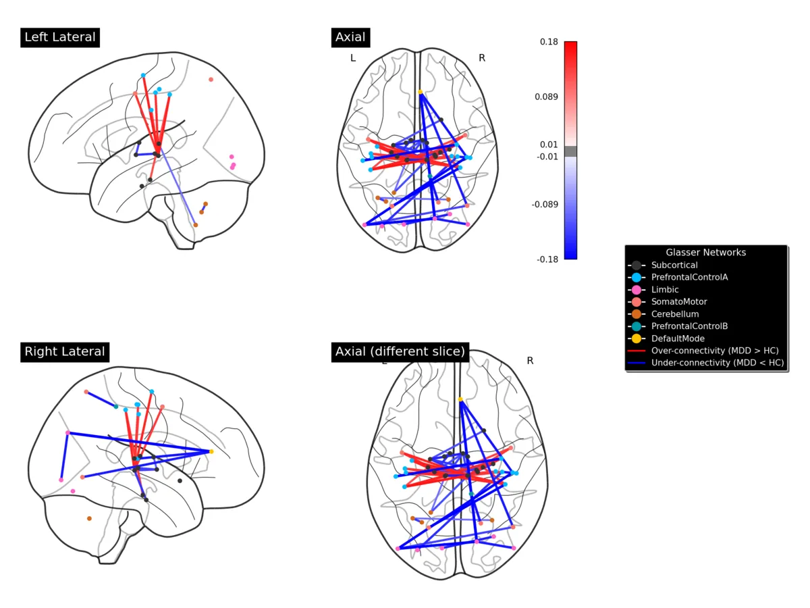

Bachelor thesis · 2026Numerical Stability of Functional MRI Connectivity Biomarkers
How much do tiny floating-point differences change the results of a brain imaging study? I reproduced the Numerical-Population Variability Ratio (NPVR) analysis by injecting controlled noise into the whole fMRIPrep pipeline, then extended it to individual connectivity edges and to PCA-based depression biomarkers on the SRPB and BMB datasets.
I did this work as a traveling researcher at ATR in Kyoto, supervised by Prof. Oscar Esteban and Dr Okito Yamashita. It comes with four interactive Marimo notebooks, a report, a poster and several presentations.